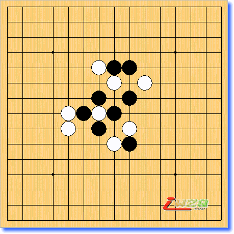
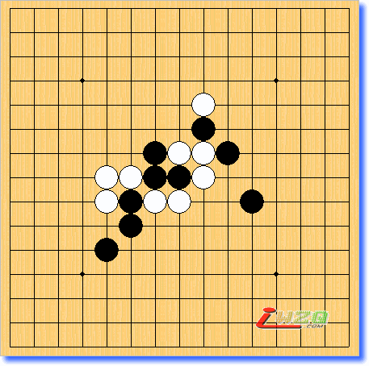
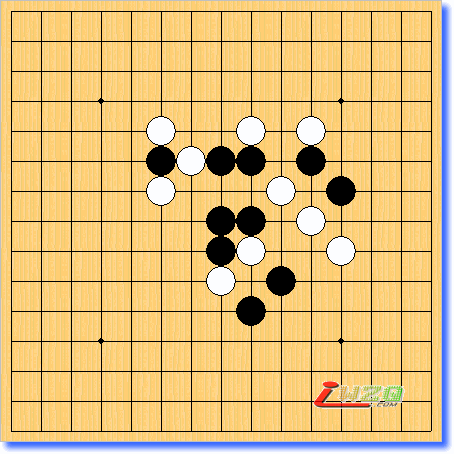
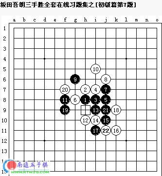

坂田吾朗三手胜全套在线习题集之[初级篇30题]
#1 坂田吾朗三手胜全套在线习题集之[初级篇30题] 作者：空山 发表时间：2006-1-23 15:44:41
1、可以看图拆解，称之为目测吧。
2、这样所有题目的查看均不需要安装java虚拟机，也就不会出线看不到的情况了。
3、所有题目均可以在本地进行拆解，复制截图下方的棋谱代码，在打谱软件中打开就可以进行拆解，具体操作如下：
方法一：用爱五子棋打谱软件看谱拆解：
a、运行爱五子棋打谱软件[此处下载]
b、选中习题图下方的棋谱代码并复制
c、选择爱五子棋打谱软件“论坛”菜单，选择下方“输入南通连珠代码”命令
d、在弹出的窗口中粘贴棋谱代码。
方法二：用五子妙手软件看谱拆解：
a、运行五子妙手软件[此处下载]
b、选中习题图下方的棋谱代码并复制
c、选择五子棋妙手软件“棋谱”菜单，选择“打开特殊谱”->“打开iwzq棋谱”
d、在弹出的窗口中粘贴棋谱代码
e、注意：此时出线的棋谱和原谱是上下颠倒的，可以点击“垂直”按钮，即可。
4、一般来说，所有题目均不给出标准答案，如果在解题的时候有疑惑，可以复制对应的棋谱代码到交流区的 习题解答 板块中提问交流。
初级题第1问黑先如何胜？提示：俗话说“三三是四三的种”。如果被反攻请不要慌乱，因为你有连续冲四的后续手段。
h8h7g7h6i7j7g8j9k8i10h11f9
#2 坂田吾朗三手胜全套在线习题集之[初级篇第2题] 作者：空山 发表时间：2006-1-23 15:47:38
初级题第2问黑先如何胜？提示：利用你看见的四三来形成“四三做杀”的攻击手段，向对方发起攻击。
h8i7h7i8h9h10i9j10j7g7g8f8g9f9e9i11
#3 坂田吾朗三手胜全套在线习题集之[初级篇第3题] 作者：空山 发表时间：2006-1-23 15:51:42
初级题第3问黑先如何胜？提示：此题也是利用“四三做杀”取胜，棋子只需两个就足够了。
h8h7i7h6i8j6i6i9j9g9g8f8g6h10e7f6
#4 坂田吾朗三手胜全套在线习题集之[初级篇第4题] 作者：空山 发表时间：2006-1-23 15:57:27
初级题第4问黑先如何胜？提示：如果使用普通的攻击手段，黑棋不可能取胜。要利用“四三做杀”的威力助战。
h8i7h7i8h9h10i9g9f10f9e9g7f8g5g6f5
#5 坂田吾朗三手胜全套在线习题集之[初级篇第5题] 作者：空山 发表时间：2006-1-23 15:58:41
初级题第5问黑先如何胜？提示：一子双杀是此题取胜的关键，但是在形成一子双杀之前，需要具备优良的条件，即要事先走出妙手。
h8h7g8g7i8f8i7i9i6j6g9h10f9g10i10j10
#6 坂田吾朗三手胜全套在线习题集之[初级篇第6题] 作者：空山 发表时间：2006-1-23 16:01:54
初级题第6问黑先如何胜？提示：不要着急，先走一手将来能为“四三做杀”创造条件的攻着。
h8i7h7h6i5g6j6g7f7e7e9f9h9i11i10j11
#7 坂田吾朗三手胜全套在线习题集之[初级篇第7题] 作者：空山 发表时间：2006-1-23 16:03:20
初级题第7问黑先如何胜？提示：没有彻底看透全局，并认为“好象可以胜”而落子，结果肯定要失败。
h8h7i8i7j8g8j7j6g6i5f8h10i9i10j10k11i11k9
#8 坂田吾朗三手胜全套在线习题集之[初级篇第8题] 作者：空山 发表时间：2006-1-23 16:04:22
初级题第8问黑先如何胜？提示：做到攻击过程中不要让白棋有反先手的机会，攻击的最后手段是一子双杀。
h8i7h7i6i8j7j6j8g8g7f6g6g9f9f10g10
#9 坂田吾朗三手胜全套在线习题集之[初级篇第9题] 作者：空山 发表时间：2006-1-23 16:06:58
初级题第9问黑先如何胜？提示：一手棋落子后形成以下有连续冲四的胜局，如果第一手棋冲四黑棋将无胜。
h8i7j7i8i9j8k8j11h9h11g7f6f5g6g8f8g9f9f10e11
#10 坂田吾朗三手胜全套在线习题集之[初级篇第10题] 作者：空山 发表时间：2006-1-23 16:09:48
初级题第10问黑先如何胜？提示：用一子双杀取胜，不过不是第一手棋就能形成的。
h8i7i6g7i8i9j8k8h9g10g9f8h10h11j10k10
#11 坂田吾朗三手胜全套在线习题集之[初级篇第11题] 作者：空山 发表时间：2006-1-23 16:14:35
初级题第11问黑先如何胜？提示：如果白棋反先手，则黑棋形成连续冲四。如果没有反先手，则黑棋第二手棋一子双杀。
h8h7h6i7g7g6g8f7e7f8e8e9j9h9k8i10h11g5
#12 坂田吾朗三手胜全套在线习题集之[初级篇第12题] 作者：空山 发表时间：2006-1-23 16:16:37
初级题第12问黑先如何胜？提示：在三个方向的眠三当中，利用起其中的两个就能取胜。
h8h7i7i6h6h5j8k9g8f8e7g9h9i9h10i10e10f10
#13 坂田吾朗三手胜全套在线习题集之[初级篇第13题] 作者：空山 发表时间：2006-1-23 16:18:35
初级题第13问黑先如何胜？提示：即使白棋有反先手，也不能放弃进攻的念头。
h8h7i7h6i8j8i6i9j6k5g8f8f7f9h9i10j9k9
#14 坂田吾朗三手胜全套在线习题集之[初级篇第14题] 作者：空山 发表时间：2006-1-23 16:19:59
初级题第14问黑先如何胜？提示：此题与其使用进攻手段，倒不如使用各种各样的防守方法来应对各种变化，这一点是研究的重点。
h8h7g6f7g9h10f9e9g10e10i11i10j9g11
#15 坂田吾朗三手胜全套在线习题集之[初级篇第15题] 作者：空山 发表时间：2006-1-23 16:21:26
初级题第15问黑先如何胜？提示：不需要什么妙手，只需在必要的时候有接应手段就行了。
h8h7h6i8i7j6i6g5j5e7g9g10i10i9j10k8g11h11
#16 坂田吾朗三手胜全套在线习题集之[初级篇第16题] 作者：空山 发表时间：2006-1-23 16:28:51
初级题第16问黑先如何胜？提示：黑棋的进攻要尽量在不让白棋夺去先手的前提下进行。
h8i7h7g8i8h9i9j9i11g9f9f8f7e6f10e9
#17 坂田吾朗三手胜全套在线习题集之[初级篇第17题] 作者：空山 发表时间：2006-1-23 16:29:58
初级题第17问黑先如何胜？提示：“四三做杀”不是万能的，此题如果用“四三做杀”的方法进攻，将成为失败的典型例子。

h8i7i8h7g8j8g7g6j7f7j6j9i10i9i11h11
#18 坂田吾朗三手胜全套在线习题集之[初级篇第18题] 作者：空山 发表时间：2006-1-23 16:31:17
初级题第18问黑先如何胜？提示：“走一子双杀并解决战斗”，实际上，黑棋没有这么简单的取胜手段。
h8h7i8j8j7i9j9i10g6g5h10f6g9f7
#19 坂田吾朗三手胜全套在线习题集之[初级篇第19题] 作者：空山 发表时间：2006-1-23 16:32:27
初级题第19问黑先如何胜？提示：“四三做杀”已经毕业了，这次要用新型的取胜方法进攻。
h8i7h6i8i6j6j7i5j8k9j10k10g9g8g10h9i10h10i11i12
#20 坂田吾朗三手胜全套在线习题集之[初级篇第20题] 作者：空山 发表时间：2006-1-24 9:15:47
初级题第20问黑先如何胜？提示：进攻要领和前一题大致一样，不过进攻的前后次序非常重要。
h8i7h6g8g7h9f7e8i10g9h11h10f10j11e11f11
#21 坂田吾朗三手胜全套在线习题集之[初级篇第21题] 作者：空山 发表时间：2006-1-24 9:17:07
初级题第21问黑先如何胜？提示：在“压制住对方的冲四抢回先手取胜”的过程中，有很多进攻次序。
h8h7g6h6i6i7j6j5i9h9j9k8f9g8h10g10f10f12
#22 坂田吾朗三手胜全套在线习题集之[初级篇第22题] 作者：空山 发表时间：2006-1-24 9:18:27
初级题第22问黑先如何胜？提示：请把前一题的手顺和相关格言结合起来。
h8h7h6i5h5g5j5e5f4e7f6f8f7g8i9j10f9j7f10i8
#23 坂田吾朗三手胜全套在线习题集之[初级篇第23题] 作者：空山 发表时间：2006-1-24 9:19:18
初级题第23问黑先如何胜？提示：走出伏击手，开发出使白棋的反击起不了作用的进攻路线。

h8i7i6h6g7g8f8e7g9e8i9j10i11h10h11g11
#24 坂田吾朗三手胜全套在线习题集之[初级篇第24题] 作者：空山 发表时间：2006-1-24 9:20:56
初级题第24问黑先如何胜？提示：对白棋的妙防，黑棋如果没有相应的措施就危险了。

h8h7g8g7f7f8g9h9f6e7e5e8j9i9k7i8i10i11
#25 坂田吾朗三手胜全套在线习题集之[初级篇第25题] 作者：空山 发表时间：2006-1-24 9:22:16
初级题第25问黑先如何胜？提示：逆向思维的活三，其微妙之处请好好品位。

h8i7h7h6i8j9j6l7i5k8i10i11k10k11l9g10h10f9f10f11
#26 坂田吾朗三手胜全套在线习题集之[初级篇第26题] 作者：空山 发表时间：2006-1-24 9:23:14
初级题第26问白先如何胜？提示：白棋的取胜方法除了四三外还有很多。
h8h7g6g7i6k7h5g4g5f7e7d7f9g10h10
#27 坂田吾朗三手胜全套在线习题集之[初级篇第27题] 作者：空山 发表时间：2006-1-24 9:24:35
初级题第27问白先如何胜？提示：即使用四三不能取胜，这种攻击方法仍然是有用的。
h8i7h7i6i8j8j7g7j5f7g8f8g9h9f9i9h10i10k9
#28 坂田吾朗三手胜全套在线习题集之[初级篇第28题] 作者：空山 发表时间：2006-1-24 9:25:43
初级题第28问白先如何胜？提示：虽然白棋瞄准着黑棋的长连筋，但最后一手棋并不在那里。

h8i7h9i8j6j7k7k6h10h11h5j8h6g8g9f8i11
#29 坂田吾朗三手胜全套在线习题集之[初级篇第29题] 作者：空山 发表时间：2006-1-24 9:59:02
初级题第29问白先如何胜？提示：如果白棋的进攻不紧凑，出现脱节现象，黑棋就有机会形成四三胜。
h8h7i8g8i7i6f9h9g9f10h10i10i9j9k8f6g6e8g7j7f7
#30 坂田吾朗三手胜全套在线习题集之[初级篇第30题] 作者：空山 发表时间：2006-1-24 10:00:29
初级题第30问白先如何胜？提示：即使黑棋能形成下一手有四三的棋型，但只要白棋走得巧妙，就能产生反四。
h8h7h6i7g7h9g9f8j6j7j9j8k9l10k10k11j10
#31 答案[初级篇1题] 作者：有志青年 发表时间：2006-1-24 11:05:37

黑13，白14是唯一防守点
黑15，做子叫杀，白可以在白14旁边先反冲，但是不能翻身，还会使局面更加明朗
若白16防守点于k6，则如上回应
#32 答案[初级篇第2题] 作者：有志青年 发表时间：2006-1-24 11:09:45
黑17做子叫杀，白必应；
黑19活三，白封堵同时活三；
黑21决定胜局
#33 答案[初级篇第3题] 作者：有志青年 发表时间：2006-1-24 12:06:31
一子就可以双杀了
#34 答案[初级篇第4题] 作者：有志青年 发表时间：2006-1-24 12:20:00
#35 答案[初级篇第5题] 作者：有志青年 发表时间：2006-1-24 12:30:33

两种情况分别别对应白18的不同变化，结果都是1子双杀
#36 答案[初级篇第6题] 作者：有志青年 发表时间：2006-1-24 12:39:08
先后顺序很重要
#37 答案[初级篇第7题] 作者：有志青年 发表时间：2006-1-24 13:07:26

19做子
21拖4
23结束
#38 答案[初级篇第8题] 作者：有志青年 发表时间：2006-1-24 13:19:18
17活三，19双杀
若白18防守于上方，如下攻击：

#39 答案[初级篇第9题] 作者：有志青年 发表时间：2006-1-24 13:32:42
21做子，23，25连续冲
#40 答案[初级篇第10题] 作者：有志青年 发表时间：2006-1-24 14:18:40
17跳活三
19，双杀
白18封堵中间
#41 答案[初级篇第11题] 作者：有志青年 发表时间：2006-1-24 14:28:29
#42 答案[初级篇第12题] 作者：有志青年 发表时间：2006-1-24 14:38:39
#43 答案[初级篇第13题] 作者：有志青年 发表时间：2006-1-24 14:51:17
若被白放就g7就惨了
#44 答案[初级篇第14题] 作者：有志青年 发表时间：2006-1-24 16:04:58
原先一直这样思考，白反击很厉害
若黑17和黑19调换顺序，则胜利
#45 答案[初级篇第15题] 作者：有志青年 发表时间：2006-1-25 14:46:50
#46 答案[初级篇第16题] 作者：有志青年 发表时间：2006-1-25 14:48:10
#47 答案[初级篇第17题] 作者：有志青年 发表时间：2006-1-25 14:50:54
#48 答案[初级篇第18题] 作者：有志青年 发表时间：2006-1-25 14:54:29
#49 答案[初级篇第19题] 作者：有志青年 发表时间：2006-1-25 21:03:43
黑第一步进攻，第二步防守的同时保持先手，第三步决定胜利
#50 答案[初级篇第20题] 作者：有志青年 发表时间：2006-1-25 21:05:56
和上一道题目一样，黑第一步瞄准目标进攻，第二步防守中保持先手，第三步决定胜利
#51 答案[初级篇第22题] 作者：有志青年 发表时间：2006-1-26 12:34:05

白22是强防，白防守其余点，均立刻失手。
#52 答案[初级篇第23题] 作者：有志青年 发表时间：2006-1-26 12:41:49
黑17活三的同时为下一步的胜利作铺垫
#53 答案[初级篇第24题] 作者：有志青年 发表时间：2006-1-26 12:55:10
19活三，白20唯一防守
21做杀，白22强防[左边空格区域内白有妙防]
23另一条线路结束战斗
#54 答案[初级篇第25题] 作者：有志青年 发表时间：2006-1-26 13:03:08


黑21，23活三，避开白中路的妙防，黑在拖四的情况下结束战斗 白24有妙防，这种解法有问题
黑23与黑25换顺序，杀掉了。
#55 答案[初级篇第26题] 作者：有志青年 发表时间：2006-1-26 13:24:05
此答案幽若给出
白妙在16，黑17看似吓人，其实没有后续的攻击力

#56 答案[初级篇第27题] 作者：有志青年 发表时间：2006-1-26 13:29:17
白相对黑来说，除了四三胜，还可以三三胜[上面一道题目]/四四胜[这道题目]，甚至抓黑的禁手取得胜利
#57 答案[初级篇第28题] 作者：有志青年 发表时间：2006-1-26 20:08:01
实在想不出来，用fiver6软件算的，白18是个妙点
#58 答案[初级篇第29题] 作者：有志青年 发表时间：2006-1-26 20:08:33
#59 答案[初级篇第30题] 作者：有志青年 发表时间：2006-1-26 20:40:18
又是fiver6的功劳。
惭愧，后面四道白先的题目有2道是通过fiver6算出来的，白18竟然没有敢走，我一直想从14、16处入手，可是黑的冲四又让我束手无策，偷懒用了软件。
看来黑棋走多了，脑子里尽是四三的模型，白从三三、四四、长连等黑禁手的渠道取胜方法在头脑中没有成型。
革命尚未完成，同志仍需努力。
#60 Re:坂田吾朗三手胜全套在线习题集之[初级篇30题] 作者：太子白 发表时间：2006-4-9 15:30:04
怎么了
#61 Re:坂田吾朗三手胜全套在线习题集之[初级篇30题] 作者：hnq123 发表时间：2006-4-10 16:49:07
有答案就好了#62 Re:坂田吾朗三手胜全套在线习题集之[初级篇30题] 作者：太子白 发表时间：2006-4-11 18:27:12
我怎么一个题也看不见呀#63 Re:坂田吾朗三手胜全套在线习题集之[初级篇30题] 作者：东方一步 发表时间：2006-7-2 22:21:51
第16题的答案好象有点问题，17与19步对调一下，应该可以不知对不对？
#64 Re:坂田吾朗三手胜全套在线习题集之[初级篇30题] 作者：东方一步 发表时间：2006-7-2 22:51:42
第13题，黑子这样下，是不是能省一手？
#65 Re:坂田吾朗三手胜全套在线习题集之[初级篇30题] 作者：xialin 发表时间：2006-8-17 20:31:58
第一题的答案错了。白16手为什么不下i9？
#66 Re:坂田吾朗三手胜全套在线习题集之[初级篇30题] 作者：xialin 发表时间：2006-8-17 20:37:27
第四题答案的17手画蛇添足，白18手已经活三了都！
黑17手直接下19就双杀了
#67 Re:坂田吾朗三手胜全套在线习题集之[初级篇30题] 作者：xialin 发表时间：2006-8-17 20:43:40
第五题答案又错了~~黑17就不对，左图杀不了，右图手顺。。。
黑17该下F7，19手H5双杀
#68 Re:坂田吾朗三手胜全套在线习题集之[初级篇30题] 作者：xialin 发表时间：2006-8-17 20:49:22
第六题答案也错。。。白棋22手能J8反三
黑17手应该下K7，19手J8双杀
#69 Re:坂田吾朗三手胜全套在线习题集之[初级篇30题] 作者：xialin 发表时间：2006-8-17 21:10:11
第13题答案错了，被白F12 H10反杀了
黑19手应该是G10，白只能下挡，黑21手H5双杀
#70 Re:坂田吾朗三手胜全套在线习题集之[初级篇30题] 作者：xialin 发表时间：2006-8-17 21:45:22
16题答案黑棋顺序错了，该先19再17！白18若下挡就没的杀了#71 Re:坂田吾朗三手胜全套在线习题集之[初级篇30题] 作者：xialin 发表时间：2006-8-17 22:02:02
21题答案我没找到~应该是先F7 J10 J8#72 Re:坂田吾朗三手胜全套在线习题集之[初级篇30题] 作者：酒鬼 发表时间：2006-8-22 21:37:38
老师，辛苦！#73 Re:坂田吾朗三手胜全套在线习题集之[初级篇30题] 作者：不再冒险 发表时间：2007-8-22 10:32:58
我怎么看不见图片?#74 Re:答案[初级篇1题] 作者：阳光普照 发表时间：2007-8-24 16:51:39
我想问下第二个图白18如果防在J10点,黑要怎么杀????拜托大虾说下,谢谢
#75 Re:答案[初级篇1题] 作者：姑苏斤欠 发表时间：2007-8-26 8:40:13
白棋走i9有可能不输么？我觉得那样不至于死那么快
#76 Re:答案[初级篇第4题] 作者：姑苏斤欠 发表时间：2007-8-26 9:04:44
第四题错的阿！白子先赢